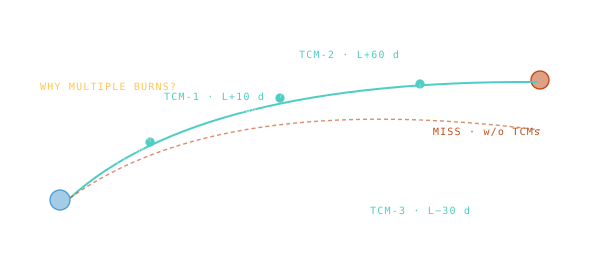

TCM — Trajectory Correction Maneuver
A small mid-cruise burn to fix the small errors that always sneak into the launch trajectory.

101 · zoom in
No rocket launch is perfect. After ascent and the trans-X injection, your spacecraft is on roughly the right trajectory — but "roughly" matters a lot when your destination is a small planet 250 million kilometres away. A 5 cm/s mistake at the start of the trip translates into 100 km of miss-distance at Mars. So you fix it.
TCMs are tiny burns — usually only a few metres per second of ∆v, sometimes less — done weeks or months into the cruise, after ground tracking has had time to measure exactly where the spacecraft actually is. Cheap in fuel, but operationally expensive: every burn is a chance for something to break, so missions plan as few as possible.
Most interplanetary missions plan four. TCM-1 a few days in. TCM-2 a few weeks in. TCM-3 closer to arrival. TCM-4 the final trim before the planet's gravity grabs you. Apollo used four to five on the way to the Moon and the same on the way back. Curiosity used four. The /missions FLIGHT tab tells you exactly how many TCMs each mission used; the lowest count usually means the launch was uncannily clean.
No launch is perfect. The actual trajectory off the launch vehicle differs from the planned one by tens of metres per second — small in absolute terms, catastrophic in arrival accuracy if left alone. A 5 cm/s error at TLI translates to 100 km of miss-distance at the Moon. TCMs trim those errors before they grow.
Most missions plan three or four. TCM-1 happens within days of launch, when the launch error is best characterised. TCM-2 a few weeks later, after early tracking refines the orbit. TCM-3 closer to arrival. TCM-4 is usually a final approach trim. Each costs only metres per second — propellant-cheap, but operationally expensive (every burn is a chance for something to go wrong).
The `tcm_count` field on `/missions` FLIGHT tabs reports how many TCMs each mission used. Curiosity used 4. Mars Reconnaissance Orbiter used 4. Apollo missions used 4-5 mid-course corrections on the way to and from the Moon.
SEE IN THE APP
- /missions FLIGHT tab shows TCM count for each mission's cruise